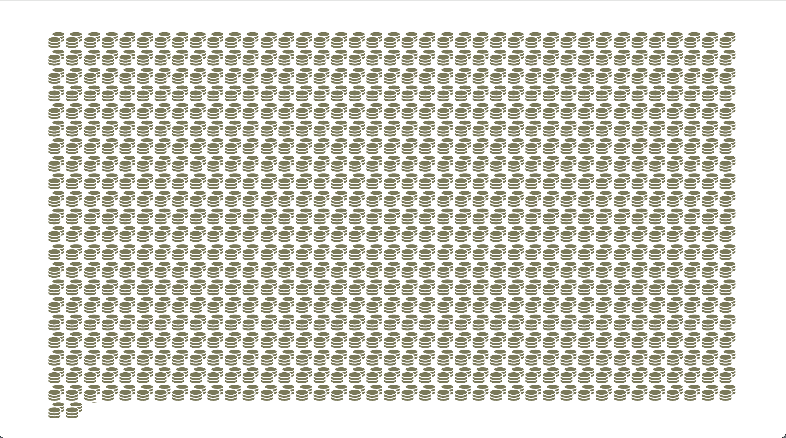
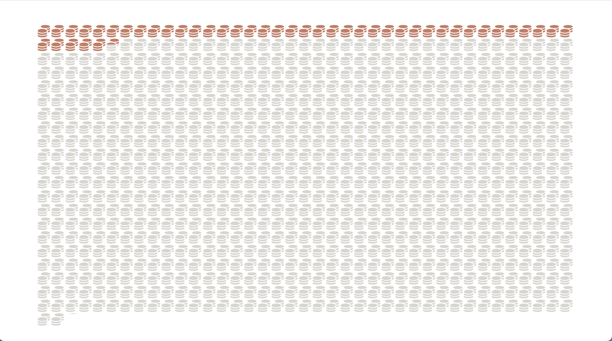
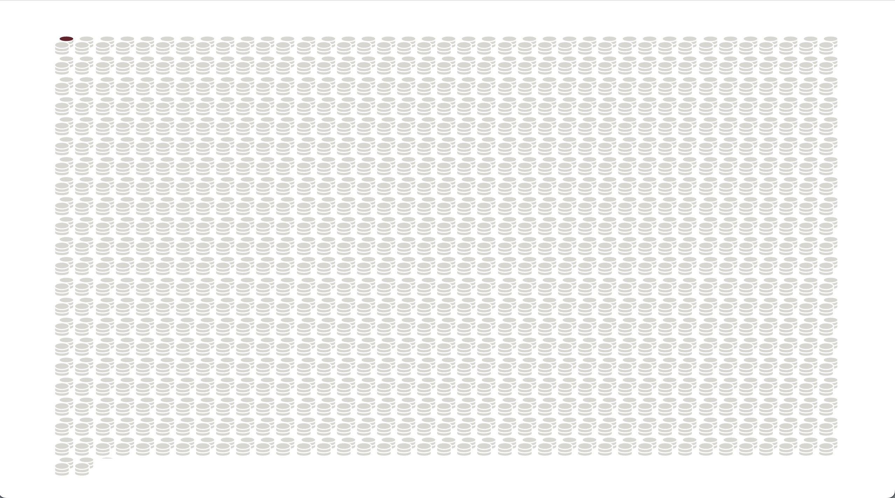

In February 2023, just weeks after Brazil's new Congress took office, landslides swept through the coastal city of São Sebastião, in São Paulo state. Fifty-six people died in what would become the deadliest single disaster during the current legislative term. The tragedy sparked a national debate about the need to prevent future disasters.
Fourteen months later, Rio Grande do Sul was submerged. Brazil's worst flood on record killed 184 people, affected 2.4 million residents and reached 478 municipalities. The Guaíba River rose to an unprecedented level. Congress responded by approving two laws designed to make it easier to reallocate and transfer parliamentary earmarks to civil protection and disaster-response efforts.
The money, however, did not follow the evidence.
Over the last four years, Rio Grande do Sul accounted for 24.8% of all climate-related disasters recorded in Brazil, yet received just 1.9% of environmental earmark funding. In São Paulo, São Sebastião never received a single real in environmental earmarks directed at disaster-prevention measures such as slope stabilization and risk reduction.
These disasters were not isolated events. Between 2023 and 2026, floods, flash floods and landslides killed 497 people across the country. During the same period, Congress controlled an unprecedented volume of discretionary funding that could, in principle, be used to address problems like these.
Parliamentary earmarks, through which senators and federal deputies direct portions of the federal budget, have become one of Brazil's main spending instruments. In 2025, they accounted for a record 30% of the federal government's discretionary spending, totaling R$ 50.4 billion. Critics describe the system as opaque and difficult to track. Supporters argue lawmakers are better positioned than ministries in Brasilia to understand local needs.
Funding did rise after the major disasters, roughly doubling after the tragedies. Environmental earmarks increased from R$ 110 million in 2023 to R$ 176 million in 2024 and R$ 209 million in 2025. Another R$ 88 million has been allocated so far in 2026, an ongoing budget year.
Yet a year after Brazil's worst flood, the distribution of funds still bore little relationship to either risk or impact.
Research on climate adaptation consistently highlights the central role of municipalities in reducing disaster risk. Cities are responsible for building drainage systems, reinforcing slopes and relocating families from vulnerable areas, for example. But almost none of the money reached the municipalities most affected by floods and landslides. The same pattern appears in the government's own risk projections, as well as across entire states and regions repeatedly struck by natural disasters.



Between 2023 and 2026, Congress earmarked R$ 164.2 billion. Each stack of coins represents R$ 16.4 million.
Only 5.4% of that amount, or R$ 8.8 billion, was directed specifically to municipalities. The remainder stayed at the federal or state level.
Of the total, just R$ 54.6 million went to environmental measures in cities. That amounts to 0.03% of all earmark funding and reached only 24 of Brazil's 5,570 municipalities.
Brazil knows where risk is
When it comes to disaster risk, Brazil already knows which municipalities are most vulnerable.
AdaptaBrasil, a platform developed by the Ministry of Science and Technology as part of Brazil's commitments under the Paris Agreement, models climate risks for every municipality in the country. Among its indicators are two measures of geo-hydrological risk: flooding and landslides.
For this report, the two indices were combined into a single risk score for each municipality. Developed in 2015, the model projects municipalities' vulnerability to geo-hydrological disasters through 2030. The funding data analyzed cover all types of parliamentary earmarks, including individual amendments, caucus amendments and special transfers, a mechanism that allows funds to be transferred with fewer administrative requirements. The analysis covers the 2023-2026 period, corresponding to the current congressional and presidential terms. All funding data were obtained from Brazil's federal Transparency Portal.
Projects classified as environmental earmarks follow the methodology developed by the Institute for Socioeconomic Studies (Inesc). The classification includes both disaster-risk management measures, such as prevention, preparedness, response and recovery, and climate policies related to mitigation and adaptation.
Of the 269 environmental earmarks identified during the period, 239, or 89%, could not be linked to a specific municipality because they were allocated at the state or federal level. The maps below consider only the 30 earmarks that could be geographically traced.
This is Brazil's geo-hydrological risk map. A total of 3,416 municipalities, six in every ten, face at least a medium risk of floods or landslides.
These are the 1,299 municipalities classified as high or very high risk. Only 14 of them, barely visible on the map, received any environmental earmark between 2023 and 2026. The correlation between a municipality's risk score and the funding it received is 0.04 on a scale from 0 to 1. In statistical terms, virtually no relationship exists.
Shown in red are the four municipalities that received the maximum possible risk score: Pilõezinhos (PB), Itambé (PE), Água Preta (PE) and Afuá (PA). None received a single real in environmental earmarks.
Projected risk and recorded disasters do not always overlap, but the mismatch persists under both measures. Even so, local news archives show recurring reports of severe rainfall and flooding in these municipalities.
Nine of the ten hardest-hit cities got nothing
No municipality has recorded more geo-hydrological disasters since 2023 than Ipojuca, a coastal city in Pernambuco just south of Recife. During the period, it registered 47 events: 43 mass movements, two heavy-rain incidents and two floods. Yet Ipojuca received no environmental earmark funding.
Brazil's official disaster archive is the Digital Disaster Atlas, maintained by the Ministry of Regional Development using civil-defense reports dating back to 1991. For geo-hydrological events alone, including floods, flash floods, waterlogging, landslides and intense rainfall, it records 29,353 occurrences, 4,612 deaths and R$ 84 billion in material losses.
Among the ten municipalities with the highest number of geo-hydrological disasters since 2023, spread across six states and five regions, nine received no environmental earmark funding. The sole exception was Brusque, in Santa Catarina, which received R$ 340,000.
Where people died, money didn't follow
Alongside São Sebastião, another 171 municipalities have recorded at least one death from geo-hydrological disasters since 2023. Of these 172 municipalities, 165, or 96%, never received an environmental earmark.
Each point on the chart represents a municipality that recorded at least one disaster during the period. Most sit directly on the zero-funding line. The largest recipient, Várzea Grande in Mato Grosso, appears near the left edge of the graph.
The pattern runs in both directions. The municipalities most affected by disasters received almost nothing, while the largest recipients of environmental earmarks experienced relatively few events.
States show the same mismatch
Part of the explanation is structural. Municipalities have historically received only a small share of parliamentary earmark funding, with most resources flowing through state and federal channels.
Yet the disconnect remains evident even at the state level.
Following the 2024 catastrophe, Rio Grande do Sul accounted for nearly a quarter of all geo-hydrological disasters recorded in Brazil. Nevertheless, it received less than 2% of environmental earmark funding. Even Canoas, one of the municipalities hardest hit by the floods, where 31 people died, received just R$ 200,000.
Pará, meanwhile, accounted for approximately 6% of all recorded disasters. Over four years, it registered 254 intense-rain events, 24 waterlogging episodes, 20 flash floods, 19 landslides and 19 floods. The state received R$ 4.6 billion in total earmarks, but none for environmental measures.
The largest shares of environmental funding went instead to São Paulo and Tocantins, two states that together accounted for barely 3% of all recorded events.
São Paulo topped the list with R$ 75 million directed toward animal protection and welfare projects. Tocantins followed with R$ 71 million allocated to accessibility and technological modernization initiatives.
When it comes specifically to disaster prevention, Santa Catarina led the country, receiving R$ 52 million for projects aimed at flood containment and mitigation.
In 2024, Brazil's Chamber of Deputies did approve a constitutional amendment that would reserve 5% of individual and caucus parliamentary earmarks for disaster prevention. It went to the Senate, where it has sat untouched ever since.
Methodology. Earmark data comes from Brazil's federal Transparency Portal and covers all parliamentary earmarks (individual amendments, caucus amendments and special transfers) with executed values for 2023-2026, the current congressional and presidential term. Within that data, environmental earmarks were identified using the classification developed by the Institute for Socioeconomic Studies (Inesc), which lists 97 budget action codes covering both disaster-risk management (prevention, preparedness, response and recovery) and climate mitigation and adaptation policy.
Risk levels come from AdaptaBrasil, a platform run by the Ministry of Science and Technology as part of Brazil's Paris Agreement commitments. It scores every Brazilian municipality on separate indices for landslide and flood risk. This report averaged the two into a single risk score per municipality. The model was built in 2015 and projects risk through 2030.
Disaster events and deaths come from the Atlas Digital de Desastres, maintained by the Ministry of Regional Development from civil-defense reports since 1991. This report used five geo-hydrological event types (floods, flash floods, waterlogging, mass movements and heavy rainfall) and, for municipality-level analysis, counted only events recorded from 2023 onward. Municipalities across all three sources were matched by their official IBGE code.
Each chart offers its own data download.